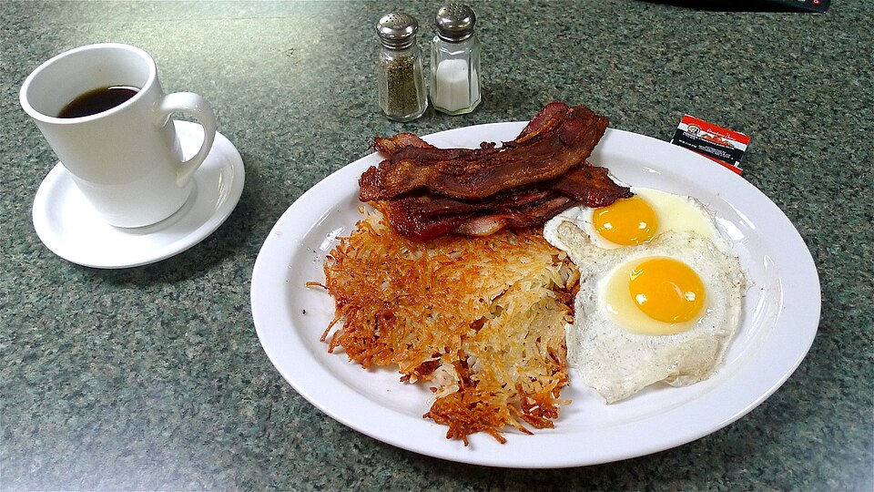

Family Diner Integrity
We never take shortcuts with portion sizes or quality. From hand-trimmed steaks to fresh cracked eggs, our kitchen prepares real food the way our founders intended.
For nearly fifty years, Tryon House Restaurant at 215 E Exmore Street has stood as a cornerstone of genuine community dining in South Charlotte. Founded in the golden era of Greek-American family diners, our tables have welcomed generations of local families, airport commuters, morning tradespeople, and neighbors who value honest food, generous portions, and heartfelt Southern hospitality.

Commitment to scratch ingredients, honest pricing, and genuine hospitality.
We never take shortcuts with portion sizes or quality. From hand-trimmed steaks to fresh cracked eggs, our kitchen prepares real food the way our founders intended.
In an era of corporate dining chains, Tryon House remains an authentic gathering space where regulars are known by name and greeted like family every morning.
Generations of Charlotteans have celebrated birthdays, post-church Sunday lunches, and early morning breakfasts in our comfortable red vinyl booths.